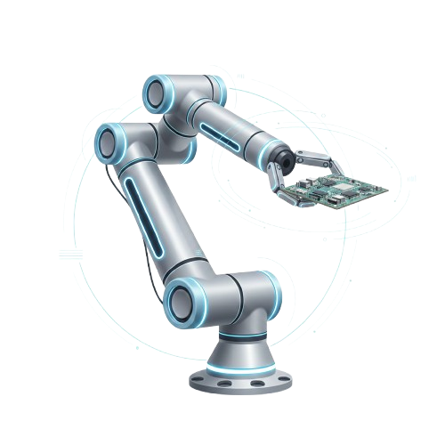

Cobots

Los Cobots, acrónimo de Robots Colaborativos, son un tipo de robot industrial diseñado
específicamente para interactuar física y seguramente con humanos en un espacio de trabajo
compartido. A diferencia de los robots industriales tradicionales, que operan en jaulas de seguridad
y a altas velocidades, los Cobots están equipados con sensores y funciones de seguridad avanzadas
que les permiten detectar la presencia humana y detenerse o reducir su velocidad automáticamente,
eliminando la necesidad de barreras físicas. Son una tecnología habilitadora digital clave para la
automatización flexible y la ergonomía en el sistema productivo moderno.
Imagina un robot industrial tradicional como un gran martillo pilón: muy potente, rápido, pero
extremadamente peligroso si no está aislado. Un Cobot, en cambio, es como un brazo robótico
sensible.
Su principal característica es que colabora en lugar de solo automatizar. Puedes poner a un Cobot
justo al lado de un operario humano. El Cobot puede encargarse de tareas repetitivas, pesadas o
ergonómicamente peligrosas (como levantar piezas o atornillar repetidamente), mientras que el humano
realiza las tareas que requieren habilidades cognitivas superiores, como la inspección de calidad
final, la toma de decisiones o el ensamblaje complejo.
El Cobot es capaz de "sentir" si choca con algo (o alguien) gracias a sensores de par en sus
articulaciones. Si esto sucede, se detiene instantáneamente para evitar daños. Esto permite una
producción más ágil y adaptable, donde la fuerza y precisión de la máquina se combinan con la
destreza y el criterio del trabajador.
Puntos Clave
- Seguridad Inherente
- Programación Sencilla
- FLexibilidad y Reubicación
- Efecto Ergonómico
- Empaquetado y Paletizado